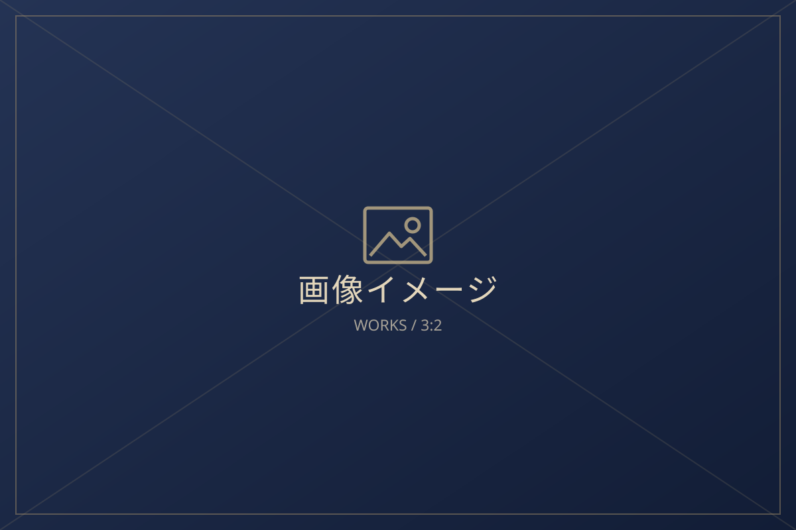

01 / SERVICE
Illustration
イラスト制作サービスの内容をここに掲載します。使用用途や制作範囲など、依頼前に知りたい情報をまとめる場所です。
NICE TO MEET YOU
プロフィール
イラストレーター / Live2D
ここに自己紹介文が入ります。制作への想いや得意なテイスト、活動内容などを掲載する予定です。
制作できること

イラスト制作サービスの内容をここに掲載します。使用用途や制作範囲など、依頼前に知りたい情報をまとめる場所です。
Live2Dの制作・モデリングなど、対応する内容をここに掲載します。制作工程や相談可能な範囲を紹介できます。
キャラクターデザインのサービス内容をここに掲載します。立ち絵やデザイン案など、対応範囲を案内する場所です。
お知らせ・活動情報
ご相談・ご依頼はこちらから。
Contact ↗